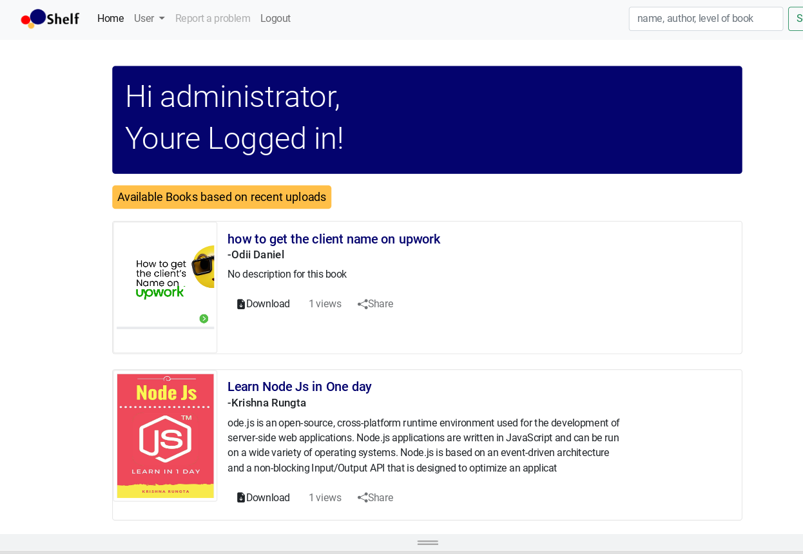

featured Project
Project One
A minimal, and light weight code snippet beautifier built off inspiration from
carbon code editor.
Used for creating and making beautiful code snippets for social media posts and sharing with fellow developers.

featured Project
Project One
A minimal, dark blue theme for VS Code, Sublime Text,
Atom, iTerm, and more. Available on Visual Studio Marketplace,
Package Control, Atom Package Manager, and npm.

featured Project
Shelf Book Repo
A lightweight django powered book repository, built as a side project
that enables users to upload, edit and delete books..